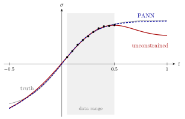

Supplement S2
Worked PANN Examples in One Dimension
Supplement to Lecture B (Section B.5). Four worked examples of physics-augmented neural networks (PANNs) in one dimension, from Hooke’s law to a learned material inside a Newton solver. Every example is implemented in Exercise B2; all numbers were verified numerically.
S2.1 The question, and what you need
Supplement S1 ended with an inverse problem: a bar with a damaged zone, whose depth and position were identified from measured displacements. But the form of the stiffness profile was assumed there, and only two numbers were found. What if the form of a material law is not known at all? That is the question a physics-augmented network answers: it learns the law itself from stress–strain data, and is built so that the result is a physically admissible material whatever the data.
Three things from earlier are used: least-squares fitting (Lecture A); the difference between imposing a requirement by construction and by persuasion (Section B.2); and the picture of the material law as one replaceable arrow of the three-step diagram (Fig. 2.3). Nothing from the differential-equation side of PINNs is needed. There are four examples: a material model with one parameter, solved in closed form; a small network whose physical properties you prove with a pencil; an honest comparison with an unconstrained network; and the learned material at work inside a solver.
S2.2 Four examples
Example P1: Hooke’s law is the smallest PANN
Do not learn the stress; learn a stored energy and derive the stress from it. The smallest energy with any content is \[\psi(\varepsilon) = \tfrac12\,\theta^2\,\varepsilon^2 \qquad\Longrightarrow\qquad \sigma = \frac{\mathrm{d}\psi}{\mathrm{d}\varepsilon} = \theta^2\,\varepsilon,\] with one trainable weight \(\theta\). Read off, for every \(\theta\): the stress derives from a potential; \(\psi\) is convex, so the stiffness \(E = \theta^2\) cannot be negative (that is why we train \(\theta\) and not \(E\)); and \(\sigma(0) = 0\). Three physical requirements, none of them in the loss. Fitting to stress–strain data is one-parameter least squares from Lecture A, in closed form: \(E = \sum \sigma_i\varepsilon_i / \sum\varepsilon_i^2\). With three tensile-test readings \((\varepsilon,\sigma) = (0.001, 205)\), \((0.002, 395)\), \((0.003, 610)\) MPa: \[E = \frac{0.205 + 0.790 + 1.830}{(1 + 4 + 9)\cdot 10^{-6}}\ \text{MPa} = \frac{2.825}{14\cdot10^{-6}}\ \text{MPa} \approx 201.8\ \text{GPa}.\] You have just trained a physics-augmented material model — and recognize it as the Young’s modulus from Lecture 1. That recognition is the point: PANNs do not replace the classical material law by something alien; they generalize the classical recipe — energy first, constraints in the form, data for the rest.
Example P2: a one-layer PANN and its built-in properties
Real materials are not linear. Replace the parabola by a small network that is convex whatever its weights: \[\psi(\varepsilon) = \sum_{j=1}^{H} \alpha_j^2\, \ln\cosh(w_j\varepsilon+ b_j) \;-\; \bigl[\psi(0) + \psi'(0)\,\varepsilon\bigr]_{\text{correction}} ,\] whose stress is \[\hat\sigma(\varepsilon) = \sum_{j=1}^{H} \alpha_j^2\, w_j \bigl[\tanh(w_j\varepsilon+ b_j) - \tanh(b_j)\bigr]. \tag{S2.1}\] Three pencil checks, each one line, each valid for all weights:
Stress-free reference: set \(\varepsilon= 0\) in (S2.1) — every bracket vanishes. \(\hat\sigma(0) = 0\), exactly.
Stability: differentiate, \(\hat\sigma'(\varepsilon) = \sum_j \alpha_j^2 w_j^2\, \mathrm{sech}^2(w_j\varepsilon+b_j) \ge 0\) — squares times squares times a positive function. The tangent stiffness can never turn negative (it can, however, decay towards zero where the \(\tanh\) saturates; the stress stays bounded).
Energy consistency: \(\hat\sigma\) is the derivative of \(\psi\) by definition. (In 1D every continuous law has a potential; the discipline pays off from 2D on, where it does not come free.)
This is the point of the example: “the network satisfies the physics for any weights” stops being a slogan and becomes three lines of calculus that you have done yourself. The architecture behind (S2.1) — nonnegative output weights on a convex activation — is the one-layer case of the input-convex networks used in the research literature.
Example P3: constrained versus unconstrained networks
Now the experiment. Ten noisy tensile readings, strains \(0.05 \le \varepsilon\le 0.5\) (no compression data, nothing at the origin), from a saturating material \(\sigma = \tanh(3\varepsilon)\). Two models with four hidden units each are fitted by the same optimizer to the same data: an unconstrained network \(\sigma_{\mathrm{NN}}(\varepsilon) = \sum_j c_j\tanh(w_j\varepsilon+b_j) + c_0\), and the PANN (S2.1) (Fig. S2.1).

| unconstrained network | PANN (S2.1) | |
|---|---|---|
| fit to data (mean squared misfit) | \(0.9\cdot10^{-4}\) | \(1.7\cdot10^{-4}\) |
| stress at zero strain \(\sigma(0)\) | \(+0.016\) | \(0\) (exact) |
| smallest tangent stiffness on \([-0.5,\,1]\) | \(-0.73\) | \(+0.03\) |
| error at \(\varepsilon= 1.0\) (extrapolation) | \(0.35\) | \(0.02\) |
Inside the data the two are indistinguishable — the unconstrained network even fits slightly better, as expected: the PANN family is a subset of the unconstrained one. The difference is everything the data did not say. The unconstrained model carries a residual stress at rest and, just past the last measurement, its stiffness turns negative: handed to a load-controlled finite element solver, that model fails at the first load step that strays outside the tested range.
Remark
What “by construction” does not buy. Repeating the experiment with other noise realizations, the PANN always satisfies its three guarantees, but it does not always extrapolate accurately: in three of four runs its error in the untested compression range was as large as the unconstrained model’s, or larger. Constraints guarantee an admissible material, not the right one. Lecture B’s dictionary said it in four words: “constraints exact; fit empirical.”
One more constraint, one less thing to learn.
The material is symmetric in tension and compression: \(\sigma(-\varepsilon) = -\sigma(\varepsilon)\). Build that in — set \(b_j = 0\) in (S2.1), leaving \(\hat\sigma = \sum_j\alpha_j^2 w_j\tanh(w_j\varepsilon)\) — and the compression branch, for which there is not a single data point, comes out right for free: the error at \(\varepsilon= -0.3\) is below \(0.02\) in all four runs. This is the slogan of Lecture B with a number attached: every requirement moved into the architecture is one the data need not teach and the optimizer cannot violate.
Example P4: the learned law inside a Newton solver
Finally, keep the diagram’s promise: replace one arrow, keep the rest. A bar (\(A = L = 1\), fixed at one end) of the learned material is pulled by \(F = 0.6\). Equilibrium is what it always was, internal force equals load, only now the internal force comes from the network: \[r(u) = A\,\hat\sigma\!\left(\tfrac{u}{L}\right) - F = 0 .\] This is Lecture 1’s \(ku = f\) with a stiffness that depends on \(u\) — one equation, no longer linear, solved by Newton’s method: linearize, solve the linear spring problem with the tangent stiffness \(k_t = A\,\hat\sigma'(u/L)/L\), repeat. Geometrically: replace the curve \(r(u)\) by its tangent line at the current \(u\), take the zero of that line as the next \(u\), and repeat (Lecture 6, Section 6.3, treats the method in full). With the idealized law \(\hat\sigma = \tanh 3\varepsilon\) (the truth behind the data): \[\begin{array}{c|ccccc} \text{iteration} & 0 & 1 & 2 & 3 & \text{exact}\\\hline u & 0 & 0.2000 & 0.2295 & 0.2310 & 0.23105\\ r(u) & -0.6000 & -0.0630 & -0.0030 & -8\cdot10^{-6} & 0\\ k_t & 3.000 & 2.135 & 1.931 & 1.920 & \end{array}\] (With the network actually trained in Example P3 the same loop converges to \(u = 0.2272\) — the \(1.7\,\%\) difference is the fit error of the material, faithfully passed on by a solver that did its own job exactly.) Each column is a Lecture 1 spring calculation with a different \(k\); the network is consulted twice per iteration — once for the stress, once for the tangent — and never sees the solver. And here the stability guarantee of Example P2 turns from a nicety into a necessity: Newton divides by \(k_t\). A material model whose tangent can change sign can send Newton the wrong way; the PANN’s cannot. Its tangent can still become very small where the law saturates, and no load above the bounded stress \(\sup\hat\sigma\) has a solution at all; strict positivity needs one more building block, e.g. an added term \(\tfrac12\beta^2\varepsilon^2\) in \(\psi\), which gives \(\hat\sigma' \ge \beta^2 > 0\). The same pattern scales unchanged to the finite element level: the element internal force is \(\int \mathbf{B}^{\mathsf{T}}\hat\sigma\,\mathrm{d}V\) and the tangent stiffness \(\int \mathbf{B}^{\mathsf{T}}\hat\sigma'\,\mathbf{B}\,\mathrm{d}V\) — the \(\int\mathbf{B}^{\mathsf{T}}\mathbf{D}\,\mathbf{B}\) of the notes, with \(\mathbf{D}\) asked from the network at every integration point.
S2.3 PINN and PANN on the same question
It is worth closing the loop with Supplement S1 explicitly, because the two methods are easily mistaken for competitors:
| inverse PINN (S1, Example 6) | PANN (this supplement) | |
|---|---|---|
| what is unknown | a few parameters of an assumed stiffness profile | the form of the material law itself |
| data | displacements of the structure | stress–strain pairs of the material |
| the network represents | the solution field \(u(x)\) | the energy \(\psi(\varepsilon)\) |
| physics enters | in the loss (residual) | in the architecture |
| after training | you have an answer to one problem | you have a material for every problem |
They are not rivals but two halves: one learns about a structure, the other about a material. The natural research-level combination — a constrained material network trained through the equilibrium equations from displacement data alone — is exactly the two sets of examples combined, and a fitting last sentence for the lecture.
S2.4 Examples, exercise parts and lecture sections
| example | Exercise B2 | related lecture sections |
|---|---|---|
| P1 Hooke as PANN | Part 1 | PANNs: Section B.5; least squares: Section A.2 |
| P2 one-layer PANN | Part 2 | construction vs. persuasion: Section B.2 |
| P3 constrained vs. unconstrained | Parts 3 and 3b | residual vs. error: Section A.3 |
| P4 learned law in a solver | Part 4 | energy: Section 1.6; element integrals: (2.16) |
The companion notebook Exercise_B2_PANN.ipynb implements all four examples with self-check cells and, completed, reproduces the numbers of this supplement (the trained material of Part 4 gives \(u = 0.2272\), as discussed under Example P4).